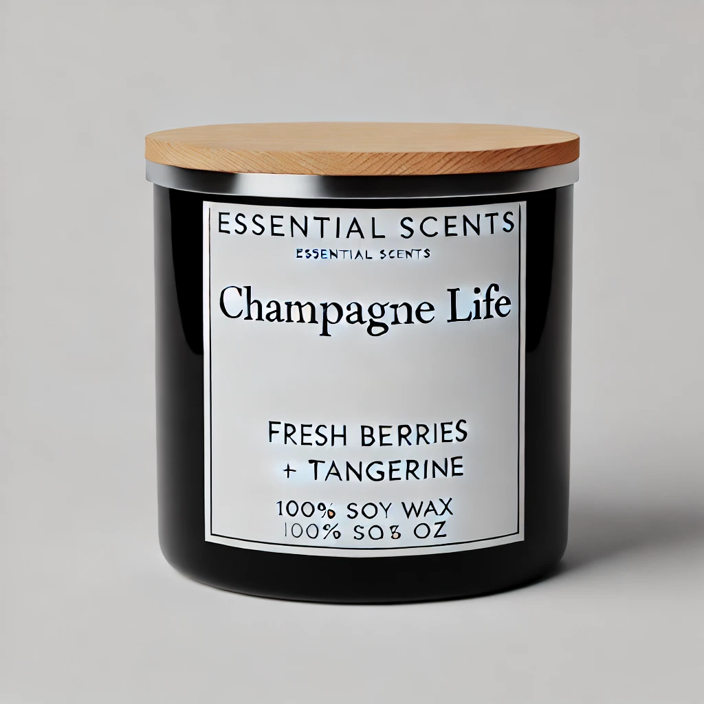

Get free shipping on orders over $75
Experience luxury and celebration with our best-selling Champagne Life Candle. Hand-poured with care, this candle embodies the effervescence and elegance of a sparkling toast. With notes of crisp champagne, juicy berries, and a hint of golden amber, it creates a rich, sophisticated aroma that turns any space into a moment of indulgence.
Made with a clean-burning soy wax blend and infused with premium essential oils, the Champagne Life Candle not only delivers a long-lasting scent but also enhances your atmosphere with a touch of glamour. Whether you're setting the mood for a cozy evening, a festive gathering, or simply treating yourself, this candle is the ultimate home luxury.
We recommend burning your candle for no more than 4 hours at a time to ensure a clean and even burn.
Allow the candle to burn until the entire surface has melted evenly. This prevents tunneling and ensures the best use of the wax.
Trim the wick to about 1/4 inch before each burn. This helps prevent excessive smoking and soot.